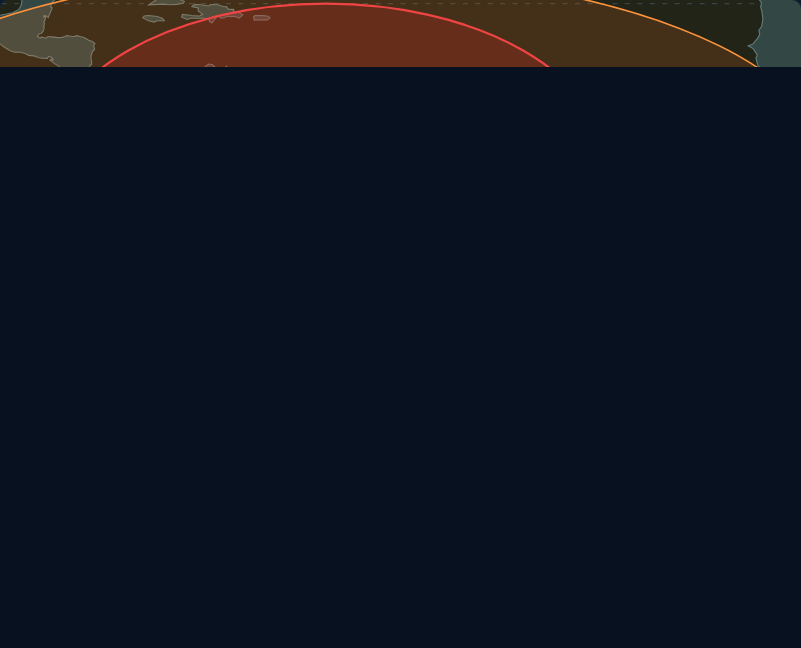
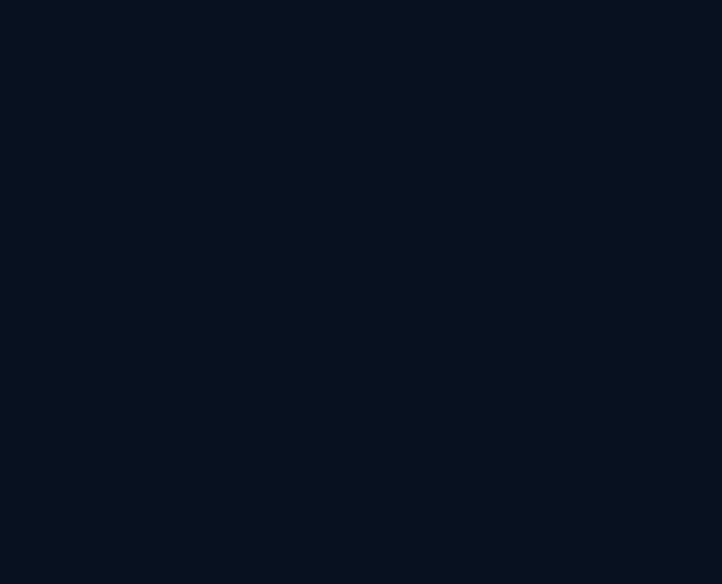
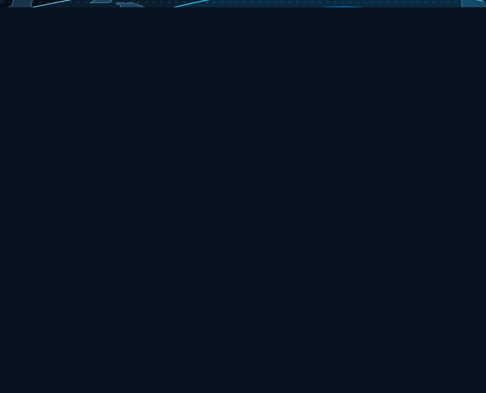

global_DJF_f1
Estado atual
Lote completo implementado e validado no branch revisao. Todas as validações passaram com 100% de sucesso (console 0 erros, narrações 384 sem falhas, responsividade mobile 360/390/414 ok, testes de ENOS Alvarez vs Fernandes & Grimm aprovados).
Autorização para eventual merge do lote do branch revisao no main.
Abrir demo local · STATUS.md · Protocolo permanente


